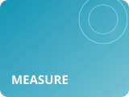

02ロボット・現場自動化Robotics
🆕 今週の新着
ダミーロボティクス、研削盤へのワーク自動投入セルを発売
出典: 架空のプレスリリース（サンプル）
段取り済みのワークを出し入れし、夜間の無人運転を支える。
🆕 今週の新着
例示ソフト、ロボットの動きを画面で確認できる設定ツールを公開
出典: 架空の業界紙（サンプル）
実機を動かす前に、干渉の有無を画面で確かめられる。
05切削加工Cutting
🔰 基礎から学ぶ
基礎から学ぶ：切削速度・送り・切込みの「3つの基本条件」
出典: 架空の技術解説（サンプル）
加工条件の出発点になる3つの数字の関係を整理。
06切断・放電加工Severing & EDM
🆕 今週の新着
テスト精工、ワイヤ放電加工機の自動結線を高速化
出典: 架空の業界紙（サンプル）
糸の切れた後の再開が、短い時間で済む。
08測定・幾何公差管理Measurement

🆕 今週の新着
サンプル測器、加工機の中で寸法を測るプローブを発売
出典: 架空のプレスリリース（サンプル）
ワークを外さずに測り、そのまま補正につなげる。
本サイトの記事は、各企業・研究機関等が公表した情報をもとに、独自に要約したものです。内容の正確性については、必ず出典元の情報でご確認ください。また、記事中のコメント（「現場の視点」）は執筆担当者個人の見解であり、発行元としての公式見解・保証を示すものではありません。
※本ページはコンテスト展示用のサンプルです。掲載記事はすべて架空の内容です。
© 2026 サンプル製作所（架空）